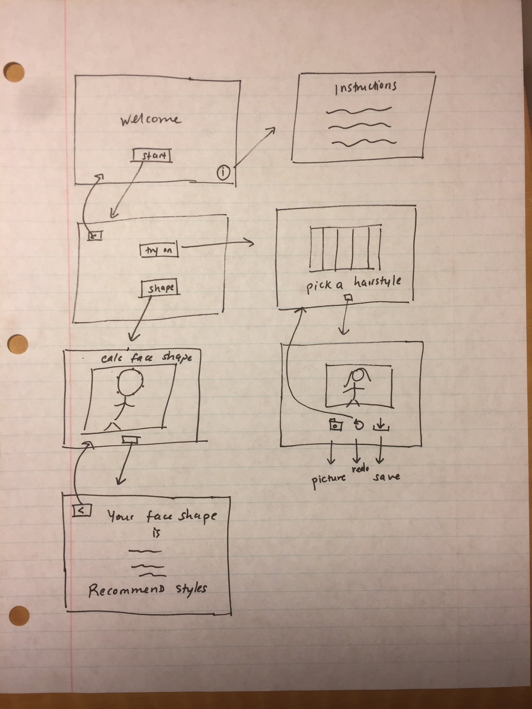
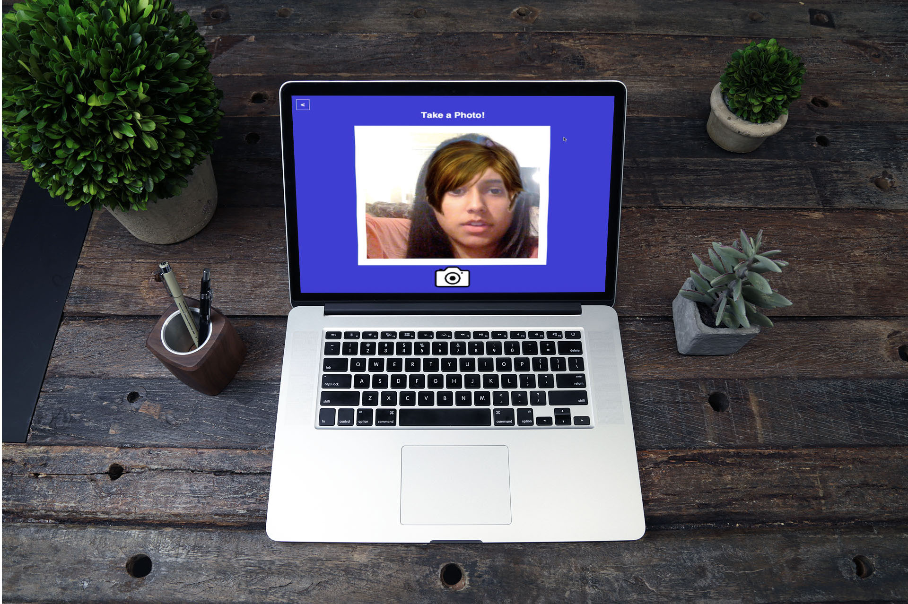

CyberCut
Allows users to visualize different haircuts on their face in real-time webcam feed through augmented reality. Detect's the user's face, calculates the user's face shape, and recommends hairstyles that best accentuate their facial shape.
Role
Frontend | Backend | UX
Research
Every time I think about getting a haircut, I wonder what styles will look good on me. It's hard for me to take the plunge without knowing exactly how it will look. This problem inspired me to want to create an application that allowed users to visualize different hairstyles on their face through augmented reality.
Competitive Analysis
I started my research by analyzing other similar applications out there.
StyleMyHair - L'Oreal: This application lets a user pick from a series of models or their own picture. Then, it places different hairstyles on top of their face, eliminating their existing hair. It looks very accurate, and showcases a lot of similarities of what I wanted to do. It also lets a user use a filter, by length or by face shape, which which is very interesting. Another cool feature is the ability to manipulate the hair color through ombre, highlight, and lowlight.
InStyle: This app lets a user use an uploaded photo to try on different hairstyles. However, a user can only choose from a selected number of celebrity hairstyles, which I think is an anti-feature. There aren't many options this way. I see this problem with supplying differerent styles in the app to choose from because a user might not find one that they like.
Hairstyle Makeover: This app is intersting because it lets a user try on facial hair as well. I wanted to add that feature to my program.
Hairstyle Mirror: This app lets a user use real time video! It seems to be doing exactly what I would like to do. It allows you to adjust the color of the styles, save the photos captured, and edit them later. It also features over 100 hairstyles.
- 
Storyboarding
After deciding what I wanted my program to encompass, I created a low-fidelity storyboard. I wanted the program to have two distinct parts, one where a user could calculate their face shape, and one where a user could try on different hairstyles. The face shape calculator would recommend styles based on the user's face shape and after trying on a hairstyle, a user would have the ability to take a picture and save the image.
Development
The most important functions in this program require facial detection. OpenCV functions activate the user's webcam and detect the users face. This information is then used to track the user's face as it moves across the screen. From there, the most challenging aspect of the program is implemented. When a user picks a hairstyle, it is projected on the user's head and scales and moves accordingly. This is done by replacing the pixels in the webcam image that pertain to the appropriate area with the image of the hairstyle. Another cool feature of the program is facial-shape calculation. The distances between key points on the user's face is used to calculate their face shape. For example, an equally wide forehead and jaw correlate with a heart-shaped face. From there, the program recommends styles that best complement facial shape.

- 
Reflections
I found this project to be very difficult and time-consuming. Learning OpenCV proved to be quite challenging and I spent a lot of time debugging my code. However, I eventually overcame those problems and I am very happy with the finished product.
This program has a lot of room for improvement. It would be nice to add more interesting features, like photo upload and a color-picker, where a user can use a photo to try on styles and pick any rgb color. I would also like to refine the UI of the program, to make it more engaging and modern.